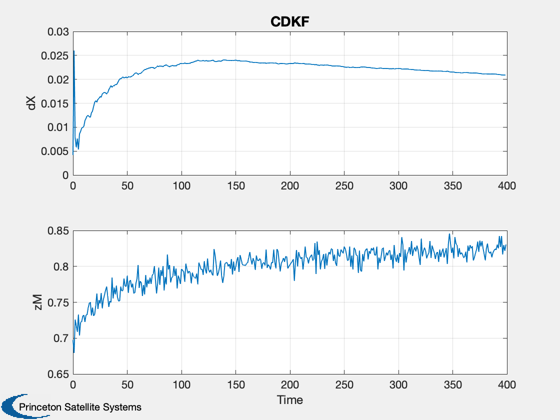

Demonstrate the continuous discrete iterated Kalman Filter.
Models a nonlinear spring. The state equation is:
FNLSpring: dx/dt = - k*(x - x0)^3; HNLSpring: z = alpha*x^2 + x;
------------------------------------------------------------------------ See also CDKF., Plot2D, RK4, JD2000 ------------------------------------------------------------------------
Contents
%------------------------------------------------------------------------------- % Copyright 1999 Princeton Satellite Systems, Inc. All rights reserved. % Since version 9. %-------------------------------------------------------------------------------
Number of time steps
%---------------------
nSim = 400;
dT = 1;
Measurement noise
%------------------
r = 0.01;
d.time = JD2000;
d.timeLast = JD2000 - dT/86400;
d.secFromStart = 0;
State noise covariance
%-----------------------
d.q = .1;
State covariance
%-----------------
d.p = 10;
Measurement noise covariance
%-----------------------------
d.r = r^2;
d.nIterations = 3;
Initial estimated state
%------------------------
d.x = 1;
Initial state
%--------------
x = d.x + sqrt(d.q)*randn;
System constants
%-----------------
x0 = 0.8;
alpha = 0.1;
k = 1;
d.hData.alpha = alpha;
d.fData.k = k;
d.fData.x0 = x0;
Preallocate memory
%------------------- xPlot = zeros(2,nSim); tPlot = zeros(1,nSim); t = 0; for j = 1:nSim % The nonlinear measurement %-------------------------- d.meas.z = alpha*x^2 + x + r*randn; d.meas.k = 1; d = CDKF( d, 'FNLSpring', 'HNLSpring' ); % Plotting %--------- xPlot(:,j) = [x-d.x;d.meas.z]; tPlot(j) = t; % Integrate the plant %-------------------- x = RK4( 'FNLSpring', x, dT, t, d.fData ); t = t + dT; end Plot2D( tPlot, xPlot,'Time',['dX';'zM'], 'CDKF' ) %-------------------------------------- % PSS internal file version information %-------------------------------------- % $Date$ % $Id: f5e53b0d689b43f5f47467aa7d5900dc09d29a63 $